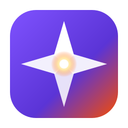

nomad
The mobile half of the Fe2O3 suite. One Rust core, thirteen Kotlin / Compose apps, synced over Syncthing — no Google account, no cloud middleman.

The mobile half of the Fe2O3 suite. One Rust core, thirteen Kotlin / Compose apps, synced over Syncthing — no Google account, no cloud middleman.
Each app carries one Fe2O3 workflow off the laptop and onto an Android phone. The interesting code lives in Rust and is shared with the desktop tools, so the phone and the terminal compute identically — the Kotlin side stays a thin shell.
One crate (fe2o3-mobile-core) holds the models,
parsers, transforms and engines — the same logic as the desktop
tools. Exposed to Kotlin through
UniFFI,
which generates the bindings. Never hand-rolled JNI.
Compose for screens, Glance for home-screen widgets, WorkManager for background work that respects Doze and App Standby. No business logic that could live in the core.
Data rides the same Syncthing
channel the desktop already uses — todo.hl,
gear.json, the relay gateway, .xrpn
programs. One source of truth, no account, no middleman.
A single Cargo workspace and Gradle multi-project. Each app ships as its own signed APK with its own launcher icon, sideloaded from the synced folder. minSdk 33, Material 3.
Thirteen phone apps, each pairing with a tool from the Fe2O3 family.
Editor + Glance home-screen widget for the same
~/.tasks/todo.hl hyperlist that scribe edits and
kastrup's z triage appends to.
A general HyperList editor: full syntax highlighting, fold, drag-reorder across depth (collapsed items move as one), and auto-renumber.
Relays WhatsApp / Messenger / Instagram / SMS / Discord (and photo previews) into kastrup and fires replies — replacing the laptop's Firefox/Marionette bridge with an on-device listener.
Ephemeris, met.no weather + observing conditions, in-the-sky
events, APOD, starchart, and a telescope/eyepiece gear catalog —
the gear.json shared with desktop astro.
TMDB browser — top-rated & popular lists, your own wish and dump lists, posters, full detail (cast, plot, streaming), and search-to-add.
Amar RPG O6 roller: D6, skill, and combat rolls with the full crit/fumble tables, plus fear rolls with mental-fortitude vs a fear DR. Engine shared with the desktop and the d6gaming wiki.
Pocket HP-41 RPN scientific calculator — full stack, registers,
modes and the XRPN command set, an HP-41-style multi-shift
keypad, persistent state, and a FOCAL program runner that loads
.xrpn files from the synced folder.
Records on launch, transcribes through Whisper, then files the
text where you choose — under an Inbox in your synced
todo.hl or appended to a notes file. The pocket
version of the laptop's Win+a dictation.
Distraction-free pad for the .md/.hl/.txt
files in your synced writing folder — newest first, full-screen
monospace editor, auto-save. The same files open in desktop
scribe over Syncthing.
An offline, searchable reference reader. Each collection is a set of titled entries — a glossary, a book, or a set of writings. Public collections ship bundled; your own load as JSON from a synced folder, so private corpora never leave your devices.
Reader for your personal daily news digest. A server-side Claude run
gathers the news you care about into a dated Markdown issue and a
typeset PDF; gazette browses the last 7 days synced into
~/.news and opens source links.
The library on your phone. On the laptop you curate a shelf of books that should exist and have Claude write the ones you grab; books is the read-only half: only finished books appear, grouped by shelf, with inline figures, read full-screen and offline.
A minimal home-screen launcher: one screen, your widgets placed freely, nothing else. Built to cost nothing when idle: no polling, no background wake-ups.
Clone the monorepo, build the app you want, drop the signed APK in a Syncthing-shared folder, and sideload it on the phone:
# host tests for the shared Rust core (no emulator needed) PATH="/usr/bin:$PATH" cargo test -p fe2o3-mobile-core # a signed release APK (cargo-ndk + uniffi-bindgen run from Gradle) export JAVA_HOME=/usr/lib/jvm/java-17-openjdk-amd64 export ANDROID_NDK_HOME="$HOME/.android-sdk/ndk/27.2.12479018" ./gradlew :apps:xrpn:assembleRelease # APK lands in apps/<name>/build/outputs/apk/release/ — sync & sideload